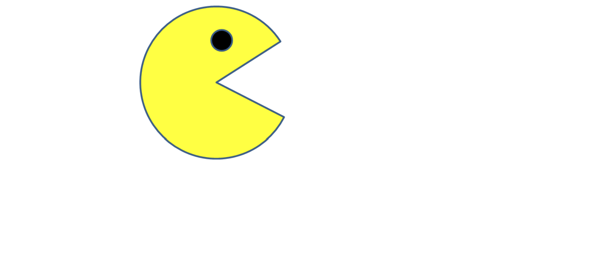
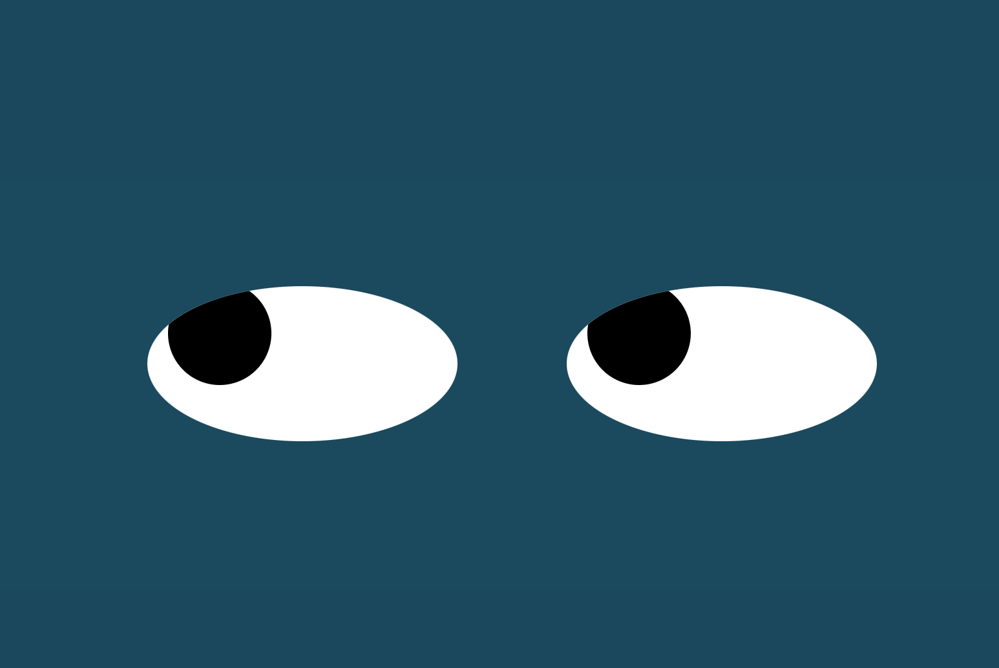

PacMen Exercise
This program detects the edges of the window and the pacmen changes direction once hitting the edges of the window.
Eye Exercise
This program detects the location of the mouse pointer and once you move the mouse pointer around, the eyes will follow the mouse pointer.
Real Time Bus Tracking Project
This program shows the real time location of the bus on the map for any specified bus that currently runs on the MBTA line.